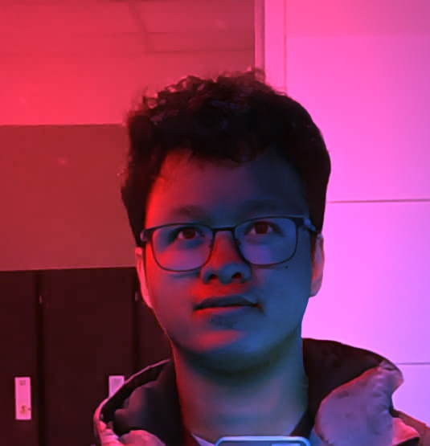
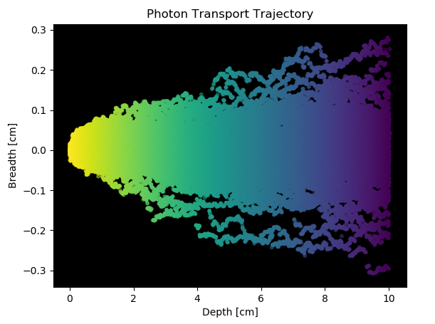
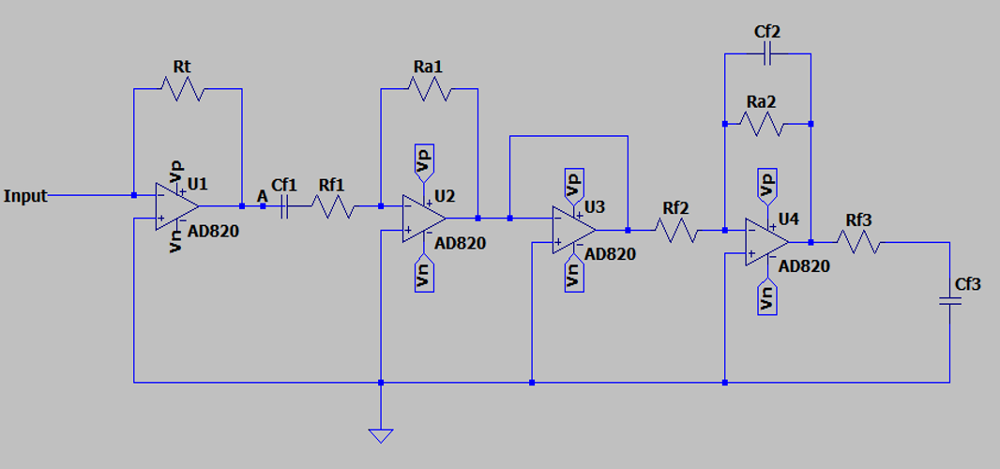
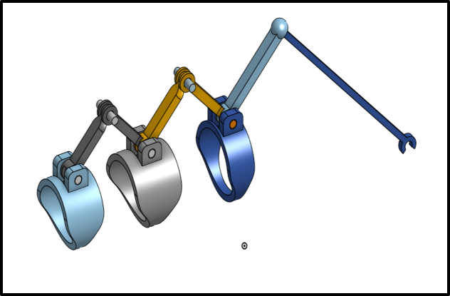
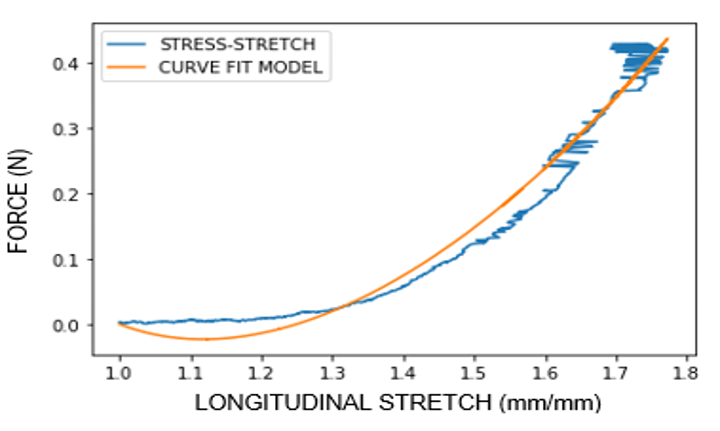
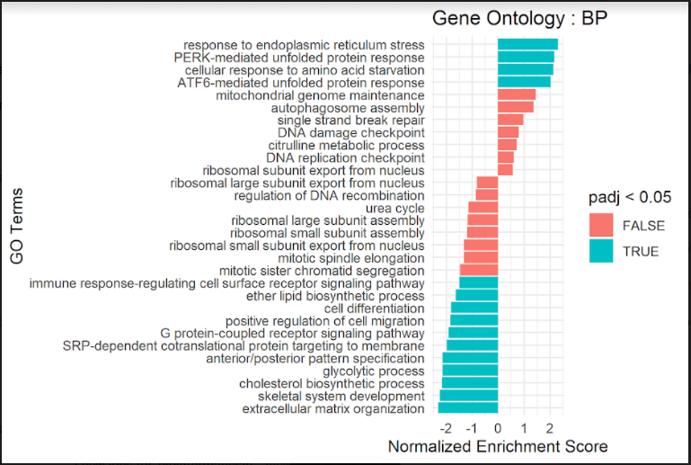

Phd Student | Research Fellow University of Leipzig
About Me

I am a Phd Student at Leipzig University in Germany working on Obesity Mechanisms. As a Phd student I am trying
to understand the systemic and genetic cause of fat accumulation in obese people. I am using lipoma - a benign tumor as a model for the fat accumulation.
I am mostly using different bioinformatic tools to discover things about obesity which includes but not limited to the genes differentially expressed and
regulated for patients as well as genes having selection associated to accumulation of fats. I was a recepient of DOST Foreign Graduate
Scholarship during my M.Eng in France specializing in Biomedical Engineering. I did my internship in INSERM - a national health research institute
in France where I tried to model the mRNA-miRNA interaction and relationship in cancer.
I worked as a Manufacturing Engineer (Test Product Engineer) in Continetal Temic Electronics Philippines.
I also worked as a freelance software developer - mainly making desktop,web and IoT based softwares. Currently, I am exploring
the field of Bioinformatics and Computational Biology for NGS, Transcriptomics, Protein Structure Prediction, Drug Discovery and Drug Repurposing.
I finished my undergraduate degree in 2014, receiving a Bachelor's of Science degree in Computer Engineering
On my college years, I have attended few conferences like 14th PSITE REGIONAL CONFERENCE; First CALABARZON Research Summit and
nternational Conference on Humanoid, Nanotechnology, Information Technology, Communication and Control, Environment, and Management ( HNICEM)
which is one of the premier international technical conferences of the Asia Pacific Region.
Should there be a keen interest in knowing about my projects, please visit 'PROJECT' section or get in touch via
links listed in the 'CONTACT' section.
Particularly, I am interested in the application of computer science in Biomedical and/or biological applications, hence
bioinformatics and computational biology. As a biomedical engineering student, I am working on a broad range of projects which
are transdisciplinary in nature. Listed are the projects which I have worked on from my undergraduate and current studies
Type 1- Fuzzy Logic Classification of Pain
-- Fuzzy Inference System based from different tools of used in pain assessment
Monte Carlo Simulation : Photon Transport in Biological Tissue
-- Object oriented design for simulating the transport of photons across human skin
Design of Optical Pulse Oximeter
-- Develop a reflective photoplethysmography circuit
Finger Orthosis for People with EDS
-- Design a device to constraint the hyperflexibility of finger joints for EDS Patient
-- Perform Finite Element Modelling and Analysis for the design
-- EDS or Ehler-Danlos Syndrome is a genetic disorder where patient experience hypermobility of joints
Characterization of Mechanical Properties of Bladder Tissue
-- Implementation of image processing techniques to approximate the Young's modulus of bladder tissue
-- Uses both Linear and Modified Yeoh Model for approximation
Design of Foot Prosthesis
-- Design a SACH and Dynamic-Foot-Response hybrid prosthesis
-- Perform Finite Element Modelling and Analysis for the design
3D SARS-CoV-19 Protein Visualization With Biopython (Coursera Guided Project)
-- Created a 3D Model of the SARS-Cov-19 Protein Structure
Anthromorphic EMG-driven Prosthetic Arm
-- Develop a bionic arm which can be controlled by EMG signals
Fetal Head Modelling
-- Develop a an anthromorphic model of fetus, with consideration of mechanical behavior of the fontanelle.
ExperimentCore
-- A module to treat transcriptomic data among different observations under certain conditions.
COR.RNA
-- A module to analyze gene-gene relationships specifically onco datasets from TCGA.
Type 1 Fuzzy Logic Classification of Pain Severity (Pain Assessment)
Facial Grimace Pain Scale - one of the common tools used in assessing pain
Image credit: redbubble.com.
This project is a Fuzzy-based
algorithm implemented on macro program. This algorithm consolidates and assesses
significant pain severity parameters derived from the assessment
tools under consideration. (FLACC, Facial Grimace and Activity
Tolerance). The key property of this innovation is that it promotes
advanced assessment of pain severity with a degree of certainty
and accuracy of the combined methods used. The Fuzzy Inference System has three inpust coming
from FLACC, facial Grimace and Activity Tolerance tools. The inputs were broken down
into its respective membership functions to represent a particular level of pain.
The use of triangular membership function for each input enables the system to come up
with a weighted equivalent for both input and output which will be used to infer the level of pain.
Monte Carlo Simulation : Photon Transport in Biological Tissue

Graph plot of the weight of photons as it travel through the medium
Using the method of Monte Carlo, the goal of this project is to make a simulation on
how photons are transported across the mulitple layer of tissues like dermis and muscular
tissues. For the simulation, Python was used, where an object representing a photon will be
generated assuming usual properties such as weight and position; these properties will be
changed while the photon object travels through a medium whose physical properties are assigned -
thickness, refractive index, absorbing and scattering coefficient and anisotropy. The results of
simulation shows the decreasing weight of the photon and from data generated yields the probability
at which the photon can either be absorbed or scattered.
Design of Optical Pulse Oximeter

Schematic Diagram of PPG Circuit rendered in LTSPICE Software
The circuit is designed using SFH 7050, which is a sensor used for reflective photoplethysmography. The sensor consists
of 2 parts - the light source and the receiver. The light will be continuously be powered up by a voltage source while placed
adjacent to skin surface, the receiver which is a light sensitve sensor will detect the changes in intensity and will be giving
out an output in terms of current. The output current will be filtered and amplified by the designed circuit.
Finger Orthosis for People with EDS

Finger Orthosis Design for EDS patient
EDS is a mutation where the body tend to have an excess collagen making joints and vascular tissues hypermobile and hyperelastic.
In phalanges, hypermobility of joints can cause bruises and further damage since the skin is not that hyperelastic. The orthosis is design to provide constraints on the hypermobility of joints preventing further injury on
non-elastic parts.
Characterization of Mechanical Properties of Bladder Tissue

Curve Fitting of the Data Acquired from the Biological Sample (Bladder Tissue)
A biological tissue sample is acquired and subjected into a strain test using a custom laboratory setup. Images were captured while the sample
was being stretched. The images were then processed using an algorithm implemented on Python. The data were fitted and compared to the simplified
Yeoh model to be able to approximate the mechanical properties of the sample which can be concluded to be viscoelastic in nature.
Design of Foot Prosthesis
Design and FEM simulation for the Foot Prosthesis
The prosthesis design is a hybrid of the existing SACH and Dynamic foot response prosthesis. The combination of the two designs
help to properly distribute the load/weight, reducing the stress experience across the mid region of the prosthesis.
3D SARS-CoV-19 Protein Visualisation with Biopython
Created an interactive three-dimensional (3D) representation of SARS-CoV-19 (Coronavirus) protein structures & publication-quality pictures of the same, understand properties of SARS-CoV-19 genome, handle biological sequence data stored in FASTA & PDB (Protein Data Bank) and XML format, and get insights from this data using Biopython
Anthromorphic EMG-driven Prosthetic Arm
Design of the phalangeal part of the Bionic Arm
Created a 3D printed model designed using On Shape. The printed model is assembled and integrated into the arduino-based system driven by an EMG sensor. The acquired EMG signals have been used to drive the motors responsible for moving the phalanges. The motion of the hand is limited to full gripping mode for now.
Fetal Head modelling
3D Rendered Fetal Head for Motion Tracking
The project is designed to mimic the the structure of a humany baby head with consideration of the mechanical behavior of fontanelles which are mobile during early fetal stages. This was done to make a near realistic
demosntration of fetal trajectory and motion during delivery. The baby head was integrated into an existing human baby body model, and a novel 6 DOF monitoring for trajectile tracking.
ExperimentCore

Bioinformatics module for transcriptomic experiment and analysis
An OOP supported module powered by R6 library of R, designed to cater the need for transcriptomic analysis including correlation analysis,
Gene ontology and GSEA.
COR.RNA
Bioinformatics module for gene-gene relationship in cancers
A module to support analysis of interaction between coding and non coding genes in
cancer. This module supports dataset from TCGA. The module allows you to perform correlation analysis and regression analysis to infer
possible relationship between the genes.


{kind=link}
{kind=link}
{kind=link}